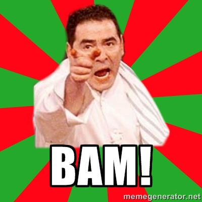

This page serves as a target for the BAM bookmarklet! You can checkout the code for the bookmarklet and associated backend tools by activating the image link below. 
Below is an equation.
a X + b X 2 = c